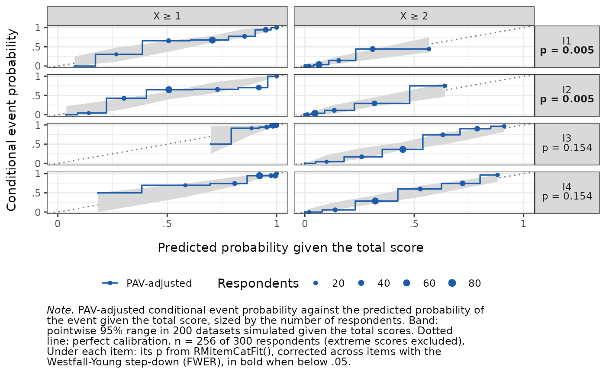

Tests, for each item, whether its response categories work as the
partial credit model predicts given the respondent's total score. Each
item with categories \(0, \dots, m\) has \(m\) cumulative events
\(X_i \ge k\) (a response in category \(k\) or higher), one per
step between adjacent categories. The model's prediction for an event,
\(P(X_i \ge k \mid r)\), depends on the item parameters alone, so no
person locations are estimated. The test detects categories that
respondents do not distinguish, categories used in the wrong order, and
steps that separate respondents more or less than the scoring assumes,
also when the threshold estimates are ordered. RMitemCatFitPlot()
shows where an item departs.
Arguments
- data
A data.frame or matrix of item responses, items scored from 0. Respondents with missing responses are left out (complete cases), since the total score must cover the same items for everyone.
- iterations
Integer, at least 20. Number of datasets simulated from the model. Default
1000L. Below 400 a notice is given. The smallest possible p is 1 / (iterations_used+ 1).- correction
Character. Correction of the item p-values across items:
"fwer"(default, Westfall-Young step-down, controls the family-wise error rate),"fdr_bh"or"fdr_by"(Benjamini-Hochberg or Benjamini-Yekutieli, control the false discovery rate), or"none". The FDR corrections need more iterations than"fwer". A warning says when there are too few for a single item to reach .05 after correction.- item_labels
Optional character vector of unique item labels, one per column of
data. Default: column names.- parallel, n_cores
Logical / integer. Run the simulations in parallel via mirai when available. Default sequential. When
n_coresisNULL,getOption("mc.cores")is used, and two workers when that is unset too.- seed
Optional integer for reproducible simulations. See easyRasch2-reproducibility.
- output
Character.
"kable"(default),"dataframe", or"list". The list also holds the simulations, so thatRMitemCatFitPlot()can draw every plot from it (fitargument) without simulating again.
Value
output = "kable": aknitr::kable()table, one row per item, with the event p-values, the item p and the corrected item p.output = "dataframe": a data.frame with columnsitem,mcb_1, ...,mcb_m(observed MCB per event, where m is the largest number of events of any item,NAfor events an item does not have),p_1, ...,p_m(uncorrected event p),p(item p) andpadj(item p corrected across items).output = "list": a list of classRMitemCatFitwithtable(the data.frame above),correction,iterations(requested),iterations_used(refitted),n_used,n_total,qualifiers,item_labels, andprepandsims, the data and simulations thatRMitemCatFitPlot()uses.
Details
Data. Respondents with the lowest or highest possible total score are left out, since their responses are fixed by the score. Every category of every item must be used by the remaining respondents. A category that is empty, or used only by respondents with an extreme total score, stops the function with an error that names the item, since its threshold cannot be estimated.
Statistic. For each item i and event \(X_i \ge k\), let
\(y_v\) be 1 when respondent v's response is in category k or higher
and 0 otherwise, and \(p_v = P(X_i \ge k \mid r_v)\) the model's
prediction. The observed \(y_v\) are regressed on \(p_v\) by
pool-adjacent-violators (PAV), which gives \(\hat c_v\), the best
non-decreasing fit. The statistic is the miscalibration component of
the Brier score in the CORP decomposition (Dimitriadis et al., 2021),
$$\mathrm{MCB} = \frac{1}{n}\sum_v (p_v - y_v)^2 -
\frac{1}{n}\sum_v (\hat c_v - y_v)^2,$$
where n is the number of respondents used. MCB is zero when the PAV
curve lies on the diagonal of the calibration plot in
RMitemCatFitPlot() and grows with its distance from it.
Reference distribution. Response patterns are simulated from the
model given each respondent's total score, at the item parameters
estimated by conditional maximum likelihood, and the parameters are
re-estimated in every simulated dataset. The fit of the prediction to the
same data is therefore part of the reference distribution. A simulated
dataset in which some category of some item is empty cannot be refitted.
It is left out of the reference distribution, and iterations_used
gives the number of simulated datasets that remain.
p-values. For each event, p is the share of the observed MCB and the
simulated ones that lie at or above the observed value, that is
(1 + the number of simulated values at or above it) divided by
(iterations_used + 1). These event p-values are not corrected for the
several events of an item and serve to show which step departs. The test of an item is
its item p. To get it, each event's MCB is studentised by the mean and
SD of the observed and simulated values together, and the item statistic
is the largest of these. The item p is the share of the observed and
simulated datasets whose item statistic is at or above the observed one.
The corrected item p (padj) adjusts it across items. With "fwer"
this is the Westfall-Young step-down on the item statistics (Ge et al.,
2003; Ferreira, 2024). With "none", padj equals p.
Calibration and power. In a simulation study (5 or 10 items with five categories, n = 250 to 1000, 199 simulated datasets), when the model held, the item p was below .05 in .039 to .051 of items, and the family-wise rate over items was .030 to .074 per condition (.041 over all of them). A check of the condition with the highest rate (n = 1000, 5 items) with 999 simulated datasets gave .052 with ordered and .045 with disordered thresholds (Monte Carlo SE .007). The test detected interchangeable or swapped categories and a step that discriminated twice as strongly as the others, also when the thresholds were ordered. It rarely detected "don't know" use in up to 10% of responses or an extreme response style shared by all items. The study is described at https://pgmj.github.io/rasch_book/chapters/category-fit.html.
References
Dimitriadis, T., Gneiting, T., & Jordan, A. I. (2021). Stable reliability diagrams for probabilistic classifiers. Proceedings of the National Academy of Sciences, 118(8), e2016191118. doi:10.1073/pnas.2016191118
Ferreira, J. A. (2024). Methods of testing a 'small' or 'moderate' number of hypotheses simultaneously. Journal of Statistical Theory and Practice, 19(1), 6. doi:10.1007/s42519-024-00412-4
Ge, Y., Dudoit, S., & Speed, T. P. (2003). Resampling-based multiple testing for microarray data analysis. Test, 12(1), 1–77. doi:10.1007/BF02595811
See also
RMitemCatFitPlot() for the plots behind the test.
Examples
# \donttest{
if (requireNamespace("eRm", quietly = TRUE)) {
data(pcmdat2, package = "eRm")
fit <- RMitemCatFit(pcmdat2, iterations = 200, seed = 1,
output = "list")
fit$table
RMitemCatFitPlot(pcmdat2, fit = fit) # calibration plot
}
#> Bootstrap p-values are based on 200 iterations, below the recommended 400.
#> ℹ The family-wise error rate is controlled at any number of iterations. With few iterations the p-values are coarse, and which comparisons get flagged depends on the seed.
#> ℹ See Johansson (2026), doi:10.31234/osf.io/7pqz4_v2.
#> ℹ Raise `iterations` in RMitemCatFit().
#> This message is displayed once per session.

# }